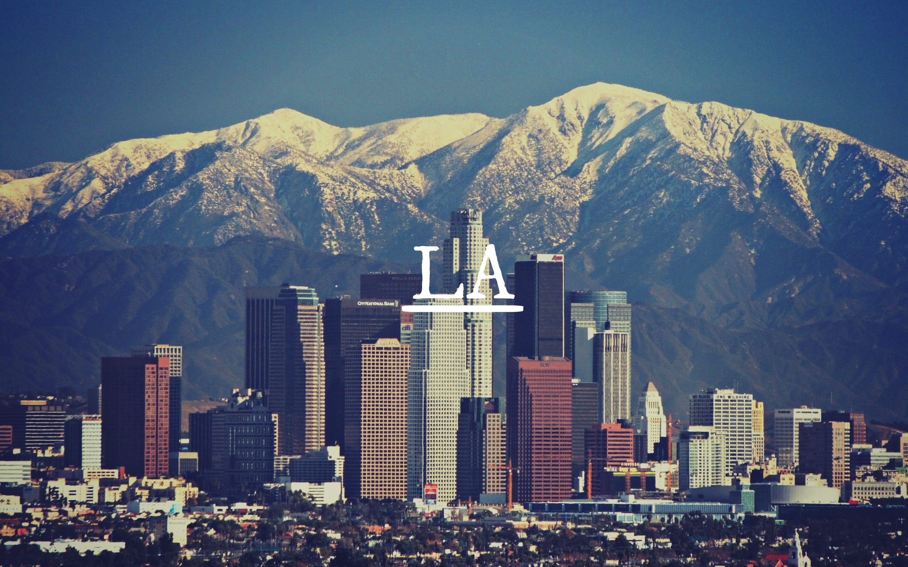

The top 10 richest cities
No doubt, there are several cities in the world which are at peak of their advancement and perhaps the richest cities in the world. But the thing is, How a city becomes rich Is it by its people or by its culture Or is it a combination of a lot of things? In most cases, The wealth of a city is measured by its Gross Domestic Product, or GDP or the Per Capita Income of its people. Here is the list of top 10 richest cities in the world in terms of GDP rankings,
1. TOKYO, JAPAN- GDP: $1,520 BILLION
One of the largest cities in the world with the GDP of about 1,520 billion dollars, Tokyo is the wealthiest city in the world in terms of GDP ranking. Tokyo has 39 million residents which are 50% more than any other urban area of the world. Also, it is the 8th largest economy in the world with a $ 2.5 trillion economy larger than that of any other city. Also, Tokyo is placed at a top position in the Global Economic Power Index and third in the Global Cities Index. Despite an earthquake in 1923, however, the city has taken extensive growth in a positive direction. The leading industries of the city are telecommunications, rebuild and publishing.
2. NEW YORK, USA- GDP: $1,210 BILLION
With the GDP of about 1,210 billion dollars, New York is the second wealthiest city in the world. It is a global hub of business and commerce and a major centre for banking and finance, world trade, tourism, media, theatre, fashion, and much more. New York has a strong economic background as of February 2017, New York City’s unemployment rate fell to just 4.3%, which is the lowest in the city’s recorded history. The city also achieved the status of full employment, as recognized by many economists. Newyork is one of the cities that abolished slavery in the United States and also one of the entry port to the immigrants from Europe that makes the more diverse place to live in. The best attraction of the city is the Statue of Liberty, Times Square, the Empire State Building and the Brooklyn Bridge.

3. LOS ANGELES, USA- GDP: $789.7 BILLION
Los Angeles is the third largest economy in the world, with an estimated population of about 10 million and a GDP of over $700 billion. Los Angeles has an exceptionally diversified economy, with a large number of established industries such as Aerospace, entertainment, and fashion, consumer products, and tourism. Also, Los Angeles is home to some of the finest research institutions and teaching hospitals in the nation, including UCLA Medical Center, Cedars-Sinai Hospital, the House Ear Institute, Good Samaritan, and many more. The city is famous as the City of Angels, however, many regards as the filmmaking hub in the United States because most of the business in the city is related to the finance and banking sectors.

4. SEOUL, SOUTH KOREA- GDP: $779.3 BILLION
One of the richest cities in the world, Seoul, the capital city of South Korea is a leading and rising global city, most popularly recognized as an economic boom and the Miracle on the Han River. It is the world’s 4th largest metropolitan economy with a GDP of about $ 845.9 billion. Seoul was also rated as Asia’s most livable city with the second highest quality of life index and a per capita income of about $ 39,786 for which the city has been ranked at 6th position globally in 2017. The most attractive places in the city are Namsan Park, the Korean War Memorial, Changdeokgung Palace and the N Seoul Tower. The major businesses include
5. LONDON, ENGLAND- GDP: $731.2 BILLION
London is a leading global city that has top advancements in the field of arts, commerce, education, entertainment, fashion, finance, healthcare, media, professional services, research and development, tourism and transportation and many more. It is the world’s largest financial centre and has the fifth largest economy in the world with a GDP of about $731.2 billion. London is often regarded as a world cultural capital and is also the world’s most-visited city. The major tourist spots in the city are the Buckingham Palace, the London Eye, the Tower Bridge and most famous Big Ben clock tower. The major businesses of the city are finance and banking.
6. PARIS, FRANCE- GDP: $669.2 BILLION
With the GDP of about $669.2 billion, France is the world leader in tourism and receives around 83 million foreign visitors annually. France is a developed country and the world’s sixth-largest economy in terms of GDP ranking France is globally considered a great power in the world for being one of the five permanent members of the United Nations Security Council with the power to veto and is an official nuclear-weapon state. The major tourist spots in the city include the Champs Elysees, Eiffel Tower, the Arc de Triomphe and the Louvre Museum and it is also one of the most visited countries in the world.
7. OSAKA, JAPAN- GDP: $654.8 BILLION
Osaka, the second largest metropolitan area in Japan, is one of the largest economies in the world with a GDP of about $ 654.8 billion. Historically, Osaka was an important centre of commerce in Japan, especially in the middle and pre-modern ages. Situated at the mouth of the Yodo River on Osaka Bay, Osaka is the second largest city in Japan that serves as a major economic hub for the country. The per capita income in the city was about ¥ 3.3 million. Also, Osaka ranks 19th among the world’s leading cities and plays an important role in the global economy. The major tourist attractions of the city are the Osaka Castle and Universal Studios Japan. The major businesses in the city include textile, metal and plastic production.
8. CHICAGO, USA- GDP: $524.6 BILLION
Chicago has the third-largest economy in the United States according to September 2017 estimates. With the GDP of about $ 670.5 billion, the city has also been rated as having the most balanced economy in the United States, due to its high level of diversification. Chicago is also the fourth-most important business centre in the world that has recorded the highest number of corporate facilities in the United States and hence making it one of the richest cities in the world. The major businesses of the city are publishing, printing and manufacturing.
9. MOSCOW, RUSSIA- GDP: $520.1 BILLION
Moscow is a major political, economic, and cultural centre of Russia and Eastern Europe It is the largest city in terms of both population and by area entirely on the European continent. Moscow is among the world’s largest cities with the GDP of about $520.1 billion According to Forbes, Moscow has been ranked as the ninth most expensive city in the world and is also one of the fastest growing tourist destinations in the world. The city produces the largest share of steel, minerals, food and chemicals for the country.
10. SHANGHAI, CHINA- GDP: $516.5 BILLION
Shanghai the centre of China, is the most expensive city to live in Mainland China, according to the study of the Economist Intelligence Unit in 2017. It is the largest and one of the richest cities in East Asia with the GDP of about $ 516.5 billion In the last two decades Shanghai has been one of the fastest developing cities in the world that has recorded the double-digit growth from 1992. The major industries in the city are tourism, chemical and steel production and it is a major commercial hub of the country.